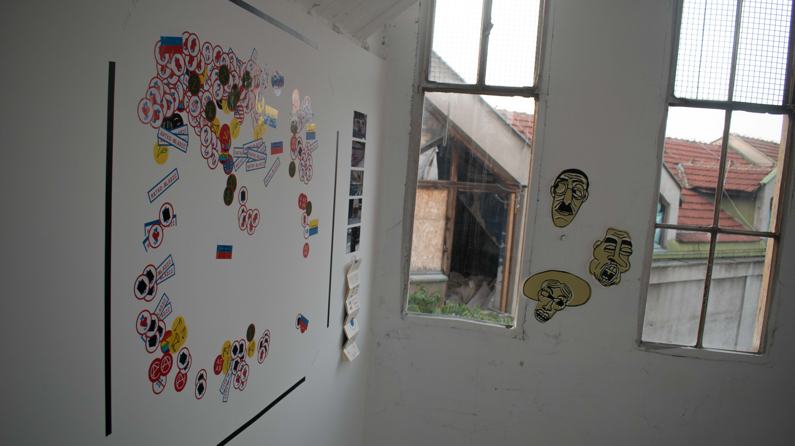
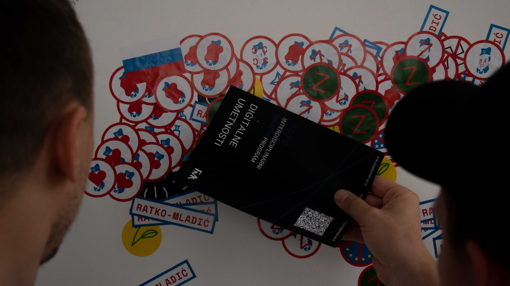
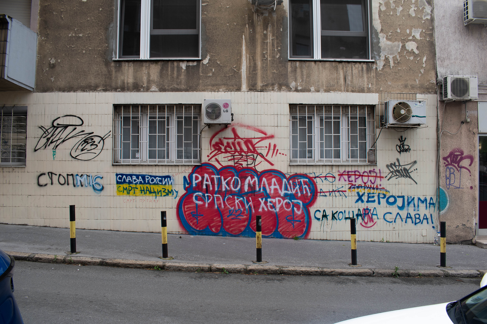

niks božović
/ krug dvojke predstavlja vizuelno istraživanje političkih grafita u centru beograda. ova trasa je izabrana jer uokviruje glavne ulice beograda i tu sam postavila pitanje: ako ovakve poruke nosi centar beograda, šta se dešava sa ostatkom srbije? ovaj projekat takođe predstavlja arhivu dvojke, svih pronađenih intervencija na grafite ratnih zločinaca i šta se desi kada oni nisu prekriveni.
projekat je imao zadatak da odgovori na pitanje prisutnosti različitih ideologija i mitomanije kada se posmatraju ratovi 90-ih i sadašnji rat u ukrajini. stoga sam klasifikovala grafite u četiri kategorije: “zapad” koja se bavi anti-zapadnim idejama, progressive što uključuje generalno levičarske ideje, ratko mladić koja je dodatno klasifikovana prema načinima intervencija, i, konačno, rusija koja se bavi gledištem ulica na rat u ukrajini.
inicijativa mladih
je organizacija koja se bori za mir u regionu, ne samo za odsustvo rata, već za mir kao trajni proces koji podrazumeva suočavanje sa prošlošću, a koji rezultira kontinuiranom saradnjom zemalja i ljudi u regionu. prošle godine su vodili akciju mapiranja murala koji podržavaju ratka mladića. vrhunac svega ovoga je bilo brisanje murala kod mitićeve rupe čiji je rezultat bio serija napada na organizatore akcije. ubrzo je taj grafit ponovo prekriven govorom mržnje.
ovakvo “preslojavanje”, pojam kojim sam nazvala pronađene intervencije, ukazuje na konstantne promene u uličnoj kulturi, kao i, ne samo na sveprisutnost mitova o ratovima 90-ih i umanjivanja uloge srbije u ratnim zločinima, već i na mane u obrazovanju mladih o mitovima i stereotipima. naravno, ovde moram da naglasim da je većinu ovih grafita uradila glasna manjina sa nadom da cela srbija nema šovinističke i reakcionarne ideje.
konačni rezultat ovog istraživanja predstavljaju fotodokumenti i infografike koje ih opisuju. njih možete videti na mom
gugl drajvu
. /
instagram
  